Per molts anys, Carme!!!
Veure felicitacionsFelicitats Carme!!!
MIQUEL MARTÍ I POL
Tot envelleix i mor per renovar-se
i aquest inici de tardor confirma
la perfecta harmonia de les coses.
PEP SALA
Però no hem de mirar enrera
per poder sentir-nos bé,
no hem de mirar enrera
per saber tot el que hem fet.
JOAN ISAAC
I passa, passa el temps inexorable
com un cavall veloç i desbocat.
Que immens que es fa el passat, que curt és el futur!
I tot ho resumim en anar passant...
Ja en tens 50!!!
Albert
Hola Carme, avui ets més gran que ahir i més jove que demà.
Benvinguda a la dècada dels 50.
Miquel i Toni
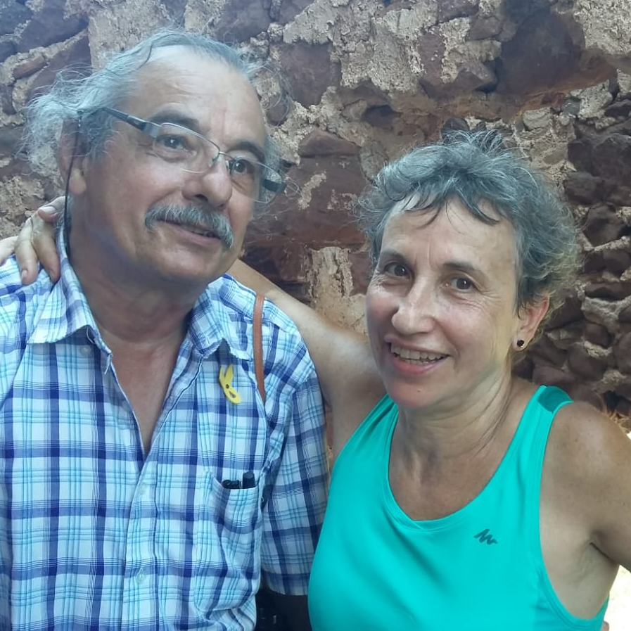Els 50 anys són la joventut de l'edat madura DISFRUTE'LS!!.
Joan i Anna
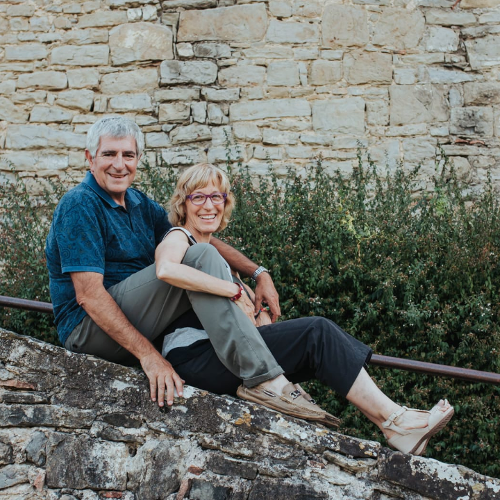Carmeta,
Benvinguda al canvi de número. Això… que el 5 és un número “guai”.
Esperem que els propers anys, sigui el teu número de la sort; i que en puguis fer molts més.
Lourdes i Pep
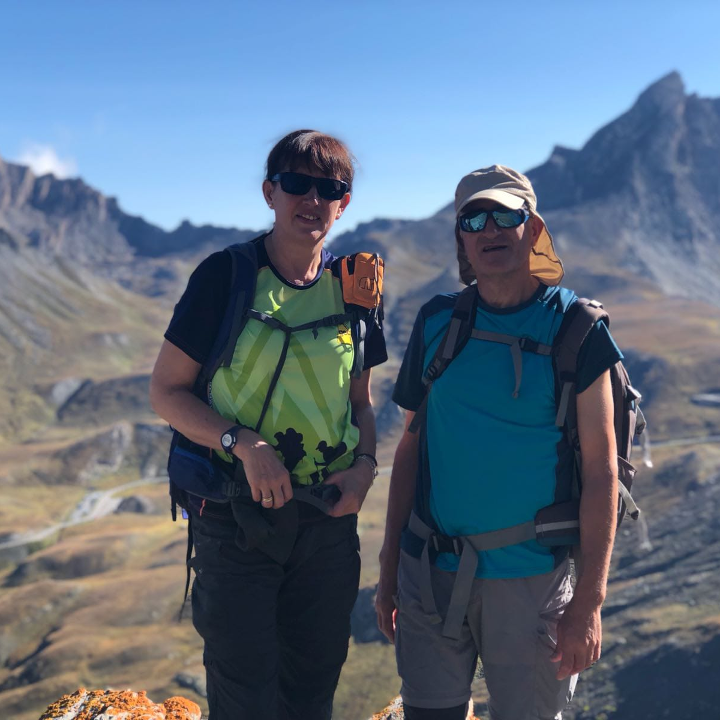Hola Carme!!
Col·loca la teva mà esquerra sobre la teva espatlla dreta i la teva mà dreta sobre la teva espatlla esquerra.
Acabes de rebre una abraçada a distància de part nostre.
M. Àngels
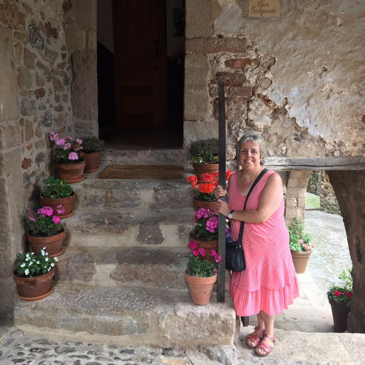Carme, moltes felicitats! Ja has arribat al mig segle.
Per molts anys i els millors desitjos per tu.
Gràcies per ser-hi sempre, un petonàs.
Alfons, Maricel, Gerard i Clàudia
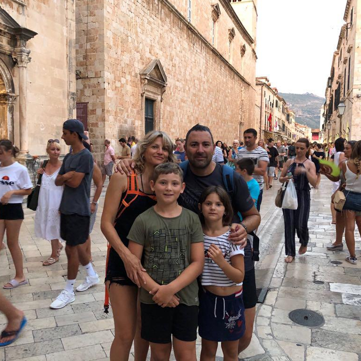Moltes felicitats Carme!!!
La vida comença als 50,
el d’abans només eren pràctiques!
Marta
Benvinguda al club dels 50!!!
De tot cor.
Montse i Ximo
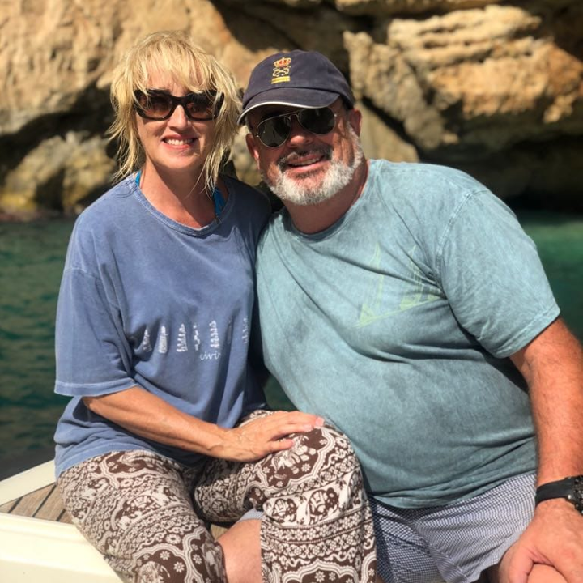Carme,
no són quants anys tens, sinó quants ens queden..
s'ha de viure el moment, i desitgem tenir molts moments amb tu,
sempre, Ximo i Montse
Rosa i Albert
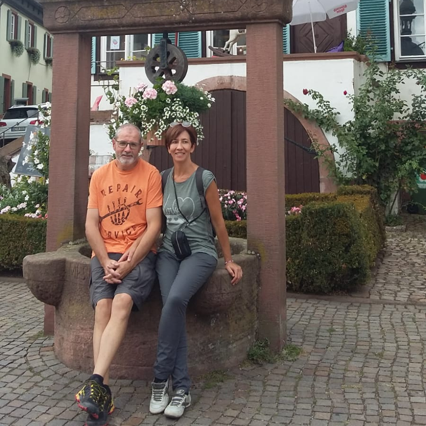Gràcies per ser-hi sempre present sobretot en els moments difícils.
Les amigues són com les estrelles,
saps que hi són encara que no les vegis.
Per Molts Anys i que l'entrada als 50 et portin molta Sort i Felicitat!
Un petó i una abraçada molt gran!
Carme i Jaume
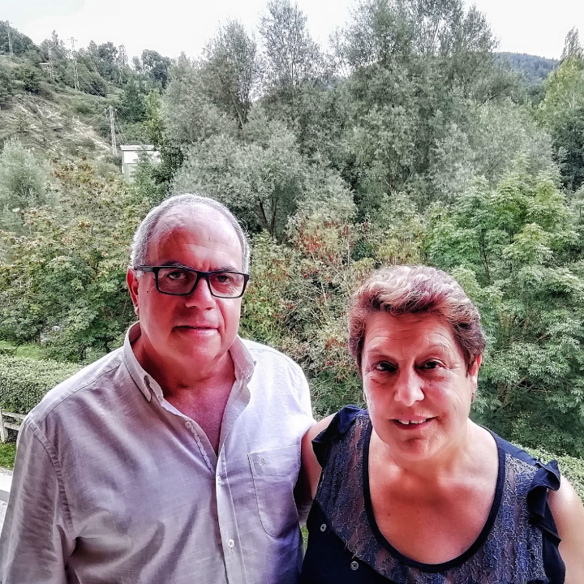Hola Carme,
moltes felicitats i que puguis complir el doble dels que tens i que els puguis passar sempre en el mateix somriure i simpatia els teus amics que sempre et garanteix costat.
M. Àngels
Companya d'aventures, còmplice de riures i plors, sempre disponible en els bons moments i en els no tan bons, ment inquieta i cor valent.
Celebro que existeixis i que formis part de la meva vida.
Feliç aniversariiiiiii!!!
Anna i Miquel
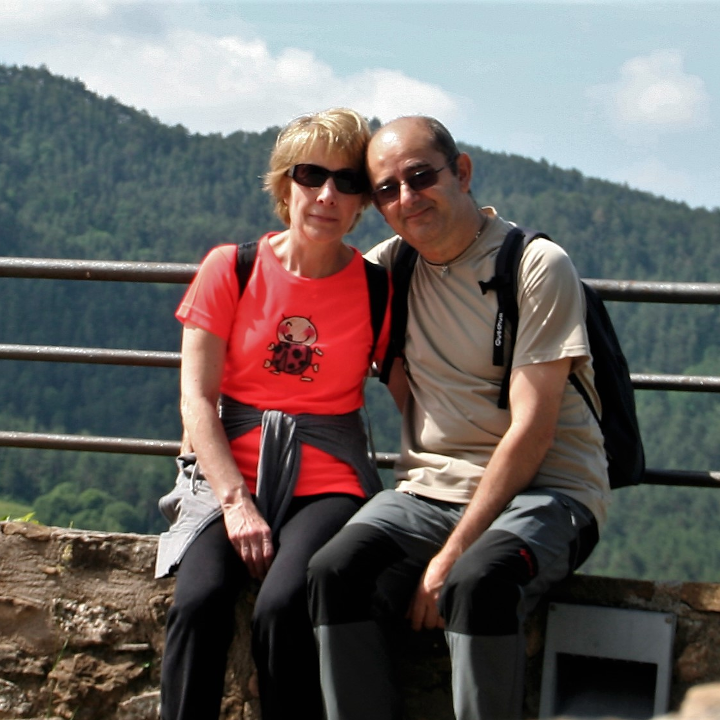Esperem que es compleixin tots els teus desitjos i que poguem compartir amb tu alguns d’aquests moments especials.
Per molts anys!!!
Ramona
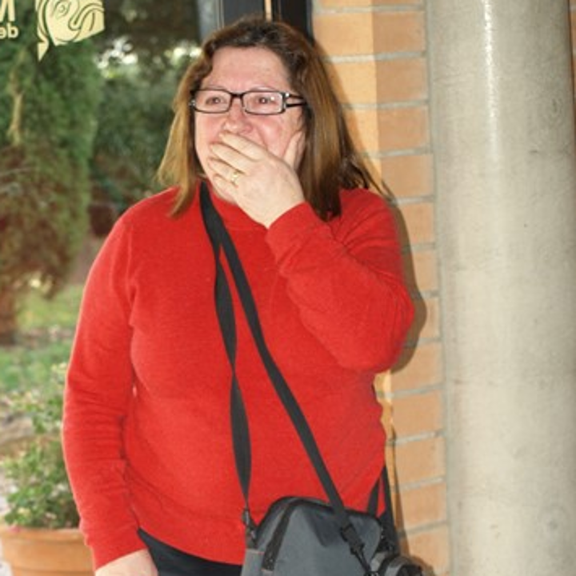La vida no es mesura en minuts sinó en moments, et desitjo de tot cor molts moments feliços en el teu 50 aniversari.
Moltes felicitats!
Juncal, Joan
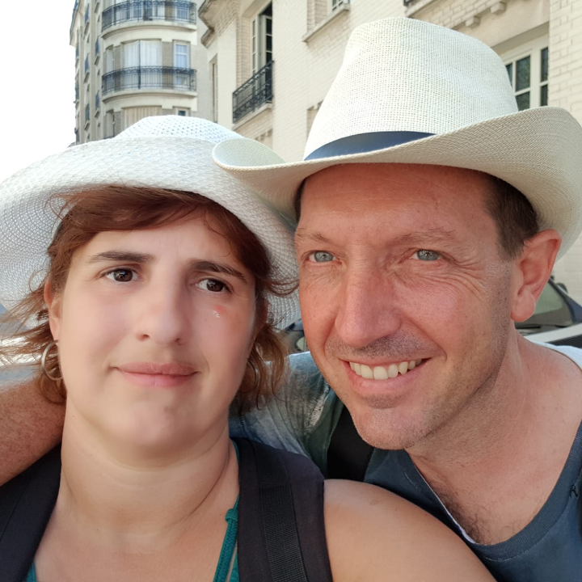Que els 50 que comencés siguin molt millor que els 50 que cumpleixes i que puguem seguir compartint tot allò que la vida ens ofereixi.
Jana i Ona
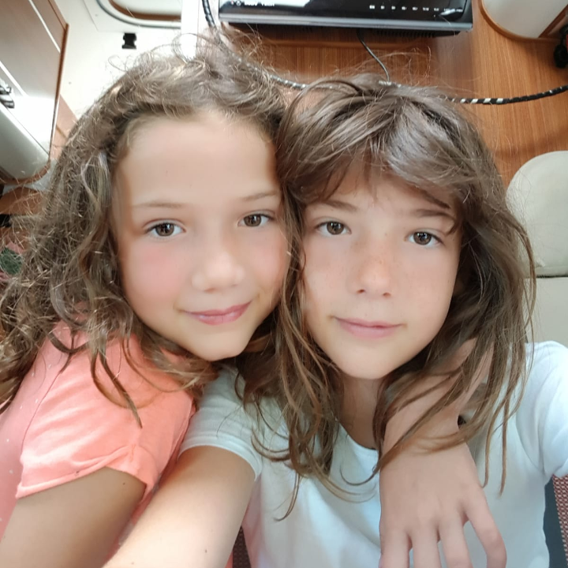Per molts anys Carme!!!
Pep
Un pasat per recordar un present per ser feliç i un futur per esperar per molts anys
Susanna
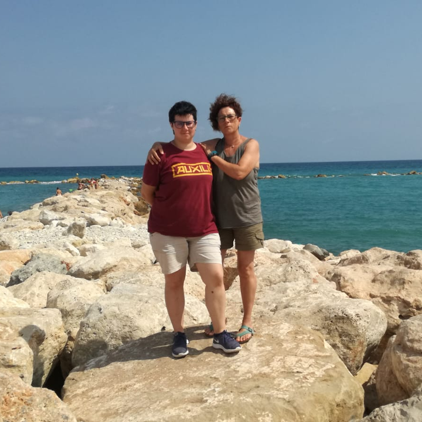Carme, moltes felicitats et desitgem el millor. GRÀCIES PER LA TEVA AMISTAT
Cristina
Per molts anys,
que en facis molts més i que ho poguem veure!!!
Laia i Ivet
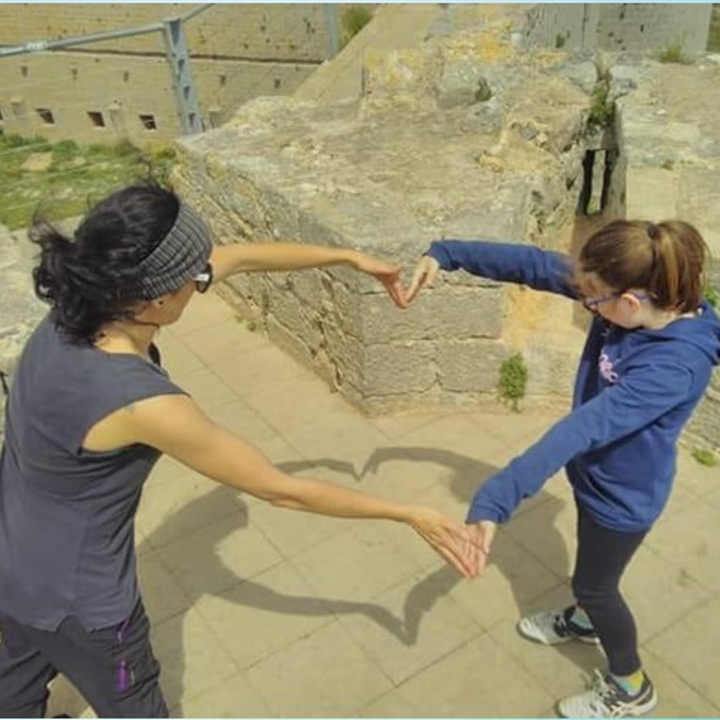Et desitgem: Que siguis feliç, 50 milions de somriures i que gaudeixis del que encara està per arribar. T'ho desitgem de tot cor.
Joan
Felicitats i per molts anys!!!